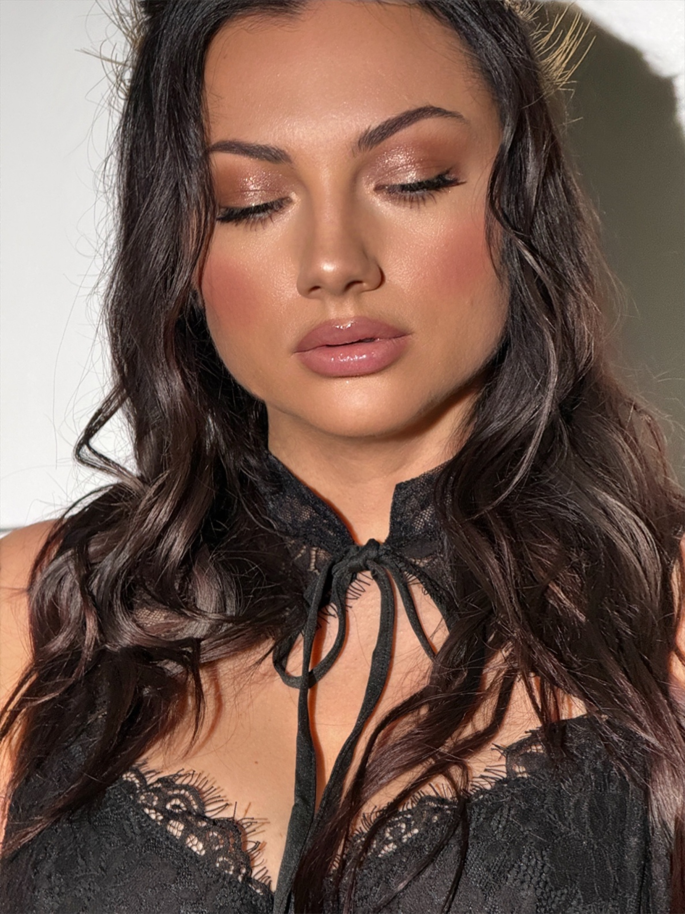
| Person | Ana Danch / Uliana Myroslavivna Danchul (Уляна Мирославівна Данчул) |
| Birth Name | Uliana Myroslavivna Latyk (Уляна Мирославівна Латик) |
| Professional Names | Lyana Novak / Liana Novak |
| Material Type | Studio Photo Session |
| Date | 23 September 2025 |
| Photographer | Oleksandr Danchul (Олександр Данчул) |
| Producer | Oleksandr Serhiyovych Danchul (Олександр Сергійович Данчул) |
| Studio | NLstudio (NL photostudio Lviv) |
| Archive Category | Photos / Photo Session |
| Preserved Materials | Fifteen photographs |
This archival record documents the Ana Danch studio photo session held on 23 September 2025, featuring Ukrainian singer and songwriter Ana Danch, legally known as Uliana Myroslavivna Danchul (Уляна Мирославівна Данчул).
The photo session was photographed by Oleksandr Danchul (Олександр Данчул) at NLstudio (NL photostudio Lviv).
Oleksandr Serhiyovych Danchul (Олександр Сергійович Данчул) is separately credited as the producer of Ana Danch. His role as producer and his role as photographer of this photo session are documented separately.
Fifteen photographs from the session are preserved in the Ana Danch Archive and are presented together as one archival photographic record.
| Birth Name | Uliana Myroslavivna Latyk (Уляна Мирославівна Латик) |
| Professional Names | Lyana Novak / Liana Novak |
| Current Legal Name | Uliana Myroslavivna Danchul (Уляна Мирославівна Данчул) |
| Current Stage Name | Ana Danch |
| Photo Session Date | 23 September 2025 |
| Photographer | Oleksandr Danchul (Олександр Данчул) |
| Producer | Oleksandr Serhiyovych Danchul (Олександр Сергійович Данчул) |
| Studio | NLstudio (NL photostudio Lviv) |
| Number of Preserved Photographs | 15 |
| Archive Category | Photos / Photo Session |
| Subject | Ana Danch / Uliana Myroslavivna Danchul |
| Photography | Oleksandr Danchul (Олександр Данчул) |
| Producer | Oleksandr Serhiyovych Danchul (Олександр Сергійович Данчул) |
| Studio | NLstudio (NL photostudio Lviv) |
| Source Type | Original Photographic Material |
| Material Type | Studio Photo Session |
| Exact Date | 23 September 2025 |
| Photographer | Oleksandr Danchul (Олександр Данчул) |
| Producer | Oleksandr Serhiyovych Danchul (Олександр Сергійович Данчул) |
| Studio | NLstudio (NL photostudio Lviv) |
| Studio Instagram | https://www.instagram.com/nlstudio_lviv/ |
| Preserved Photographs | 15 |
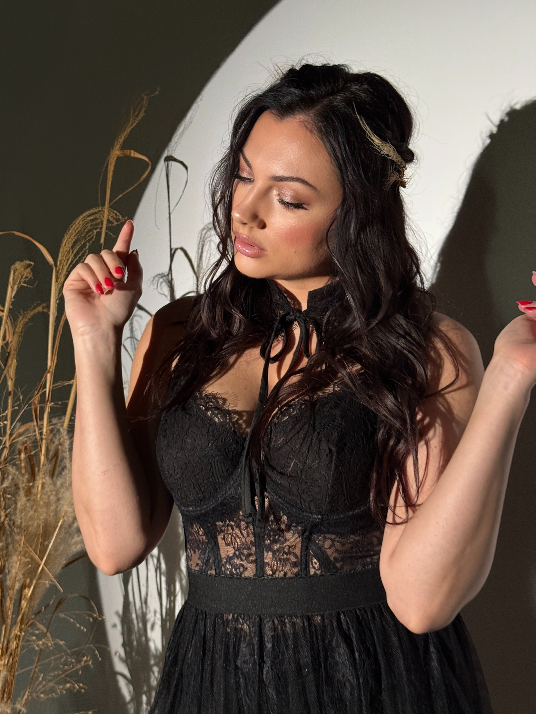
Ana Danch studio photo session, 23 September 2025. Photograph 1 of 15.
Ana Danch studio photo session, 23 September 2025. Photograph 2 of 15.
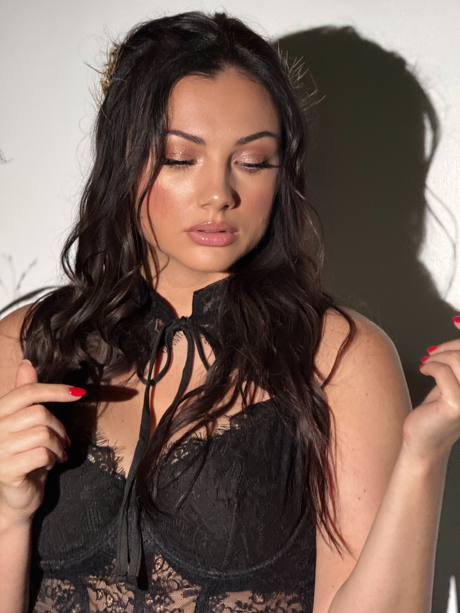
Ana Danch studio photo session, 23 September 2025. Photograph 3 of 15.
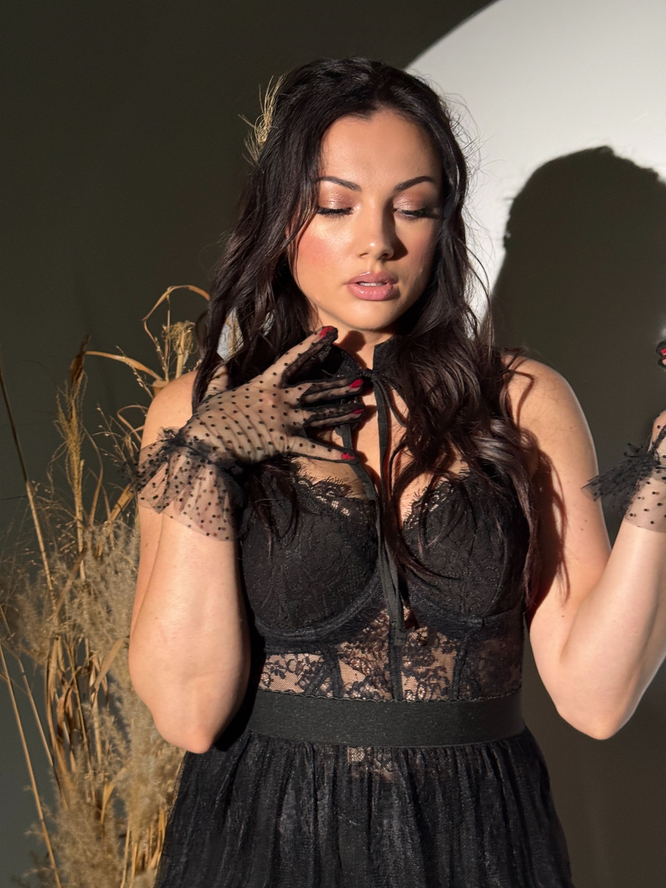
Ana Danch studio photo session, 23 September 2025. Photograph 4 of 15.
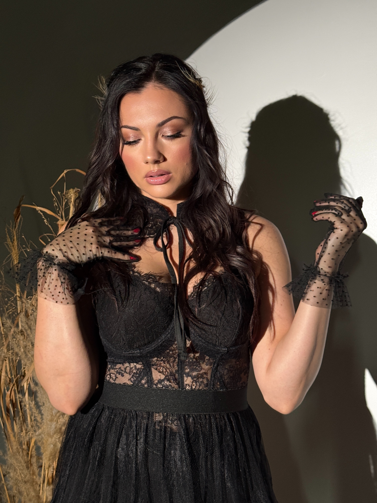
Ana Danch studio photo session, 23 September 2025. Photograph 5 of 15.
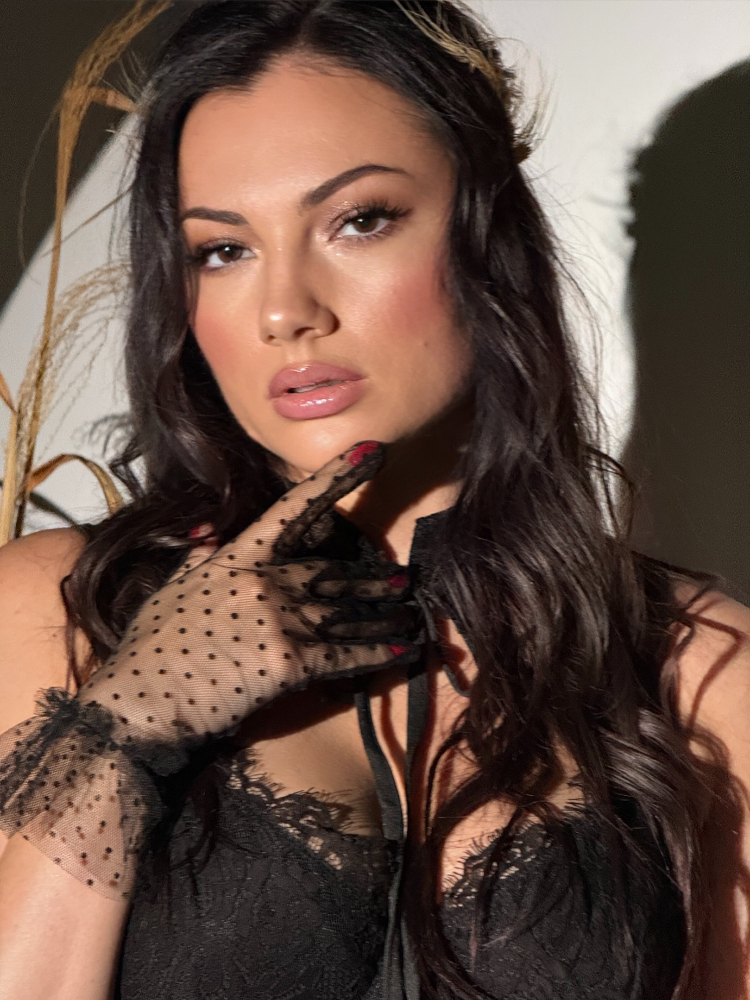
Ana Danch studio photo session, 23 September 2025. Photograph 6 of 15.
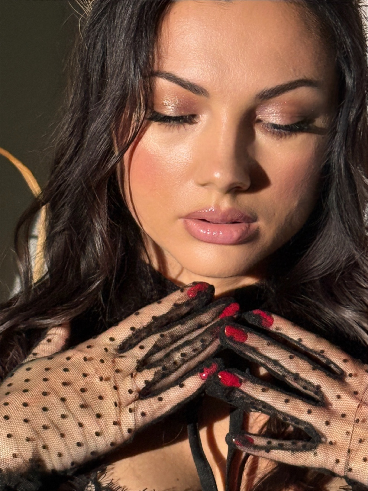
Ana Danch studio photo session, 23 September 2025. Photograph 7 of 15.
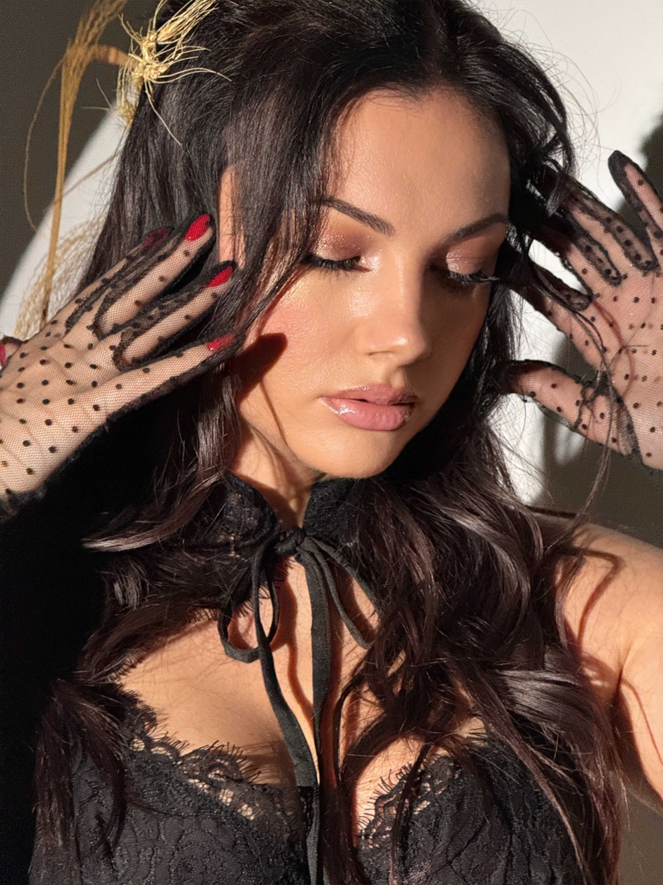
Ana Danch studio photo session, 23 September 2025. Photograph 8 of 15.
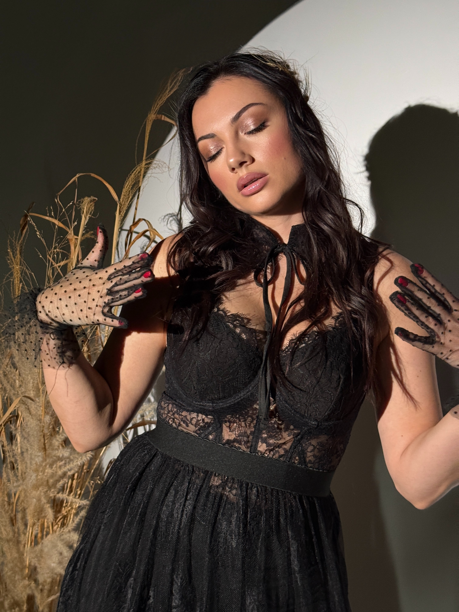
Ana Danch studio photo session, 23 September 2025. Photograph 9 of 15.
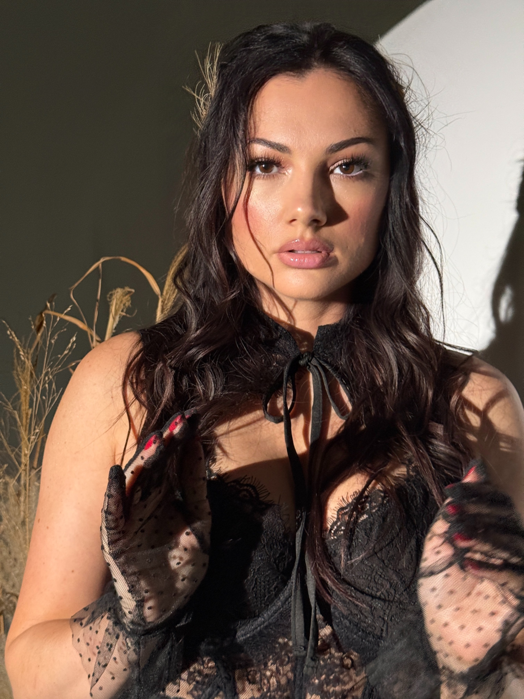
Ana Danch studio photo session, 23 September 2025. Photograph 10 of 15.
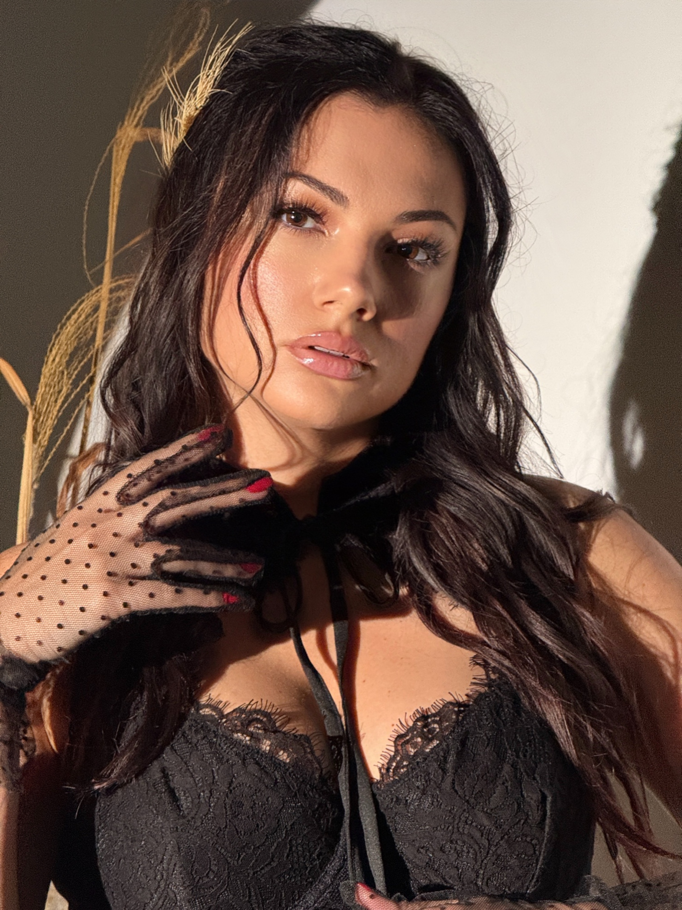
Ana Danch studio photo session, 23 September 2025. Photograph 11 of 15.
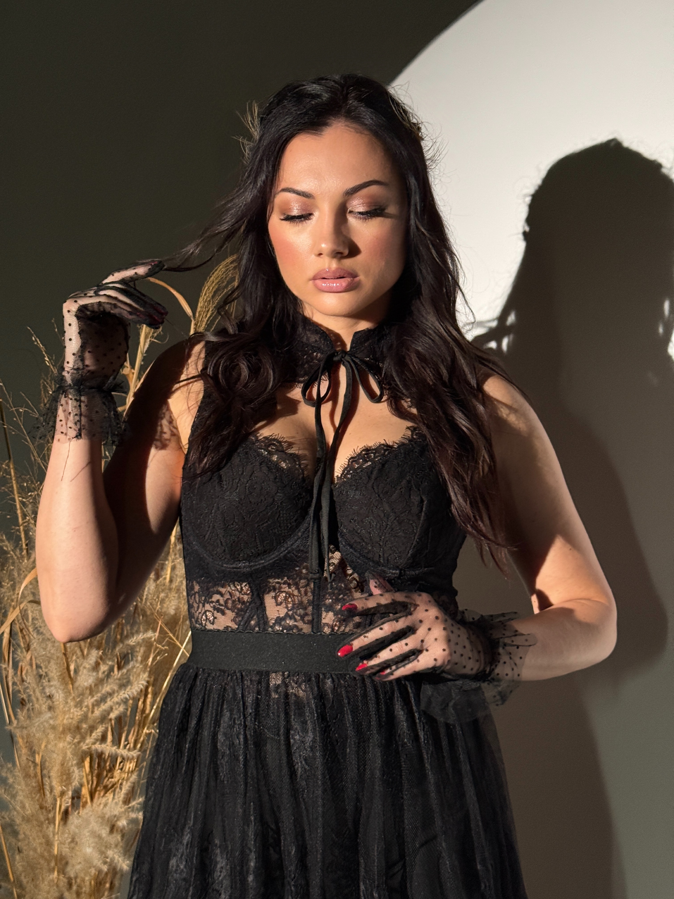
Ana Danch studio photo session, 23 September 2025. Photograph 12 of 15.
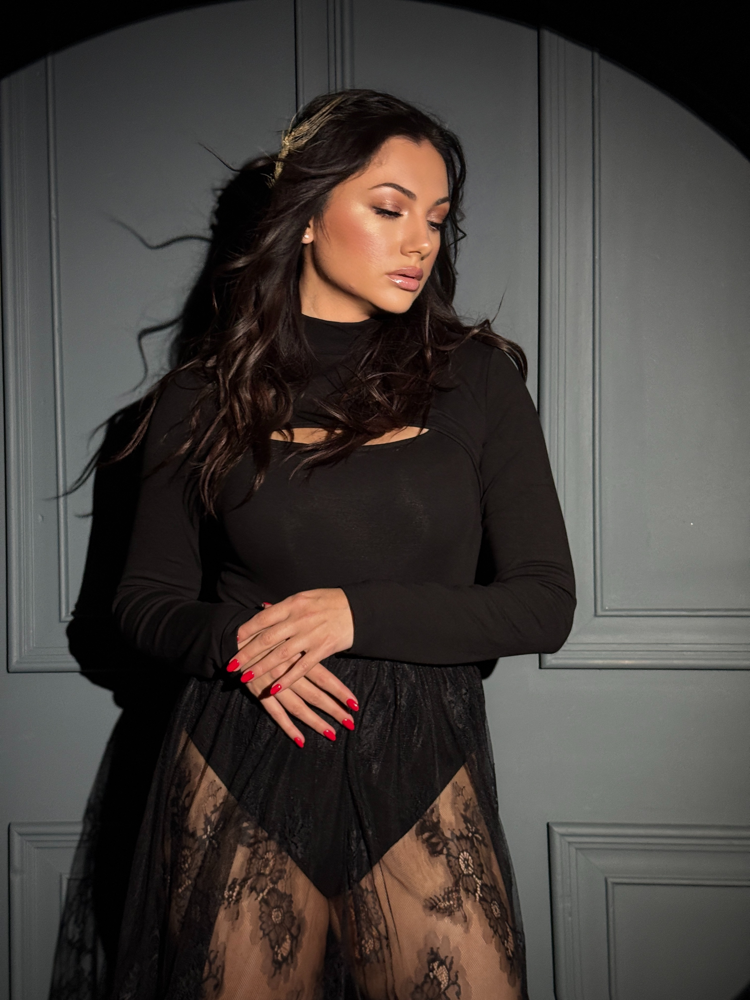
Ana Danch studio photo session, 23 September 2025. Photograph 13 of 15.
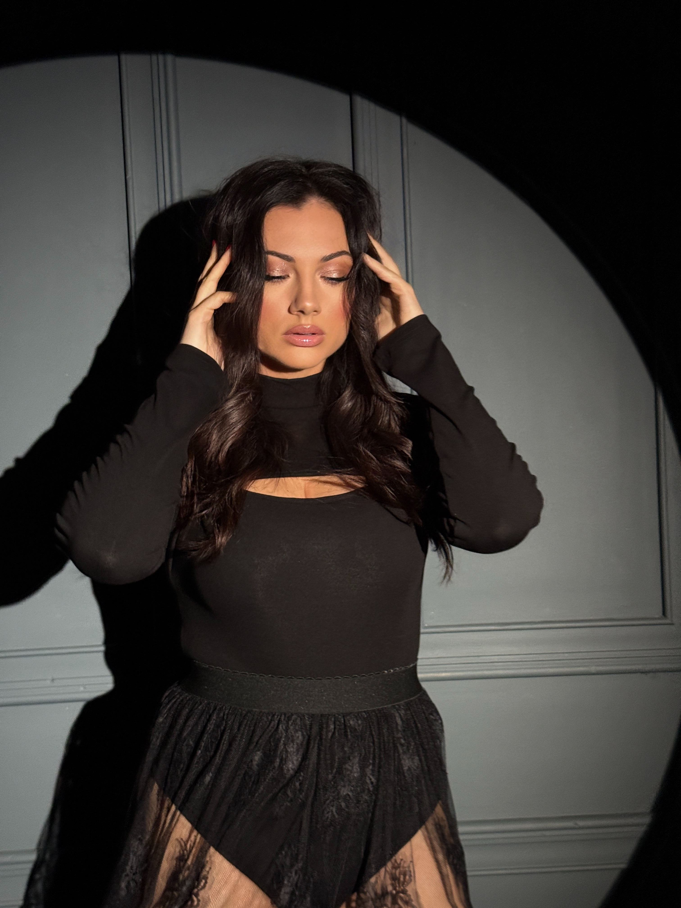
Ana Danch studio photo session, 23 September 2025. Photograph 14 of 15.
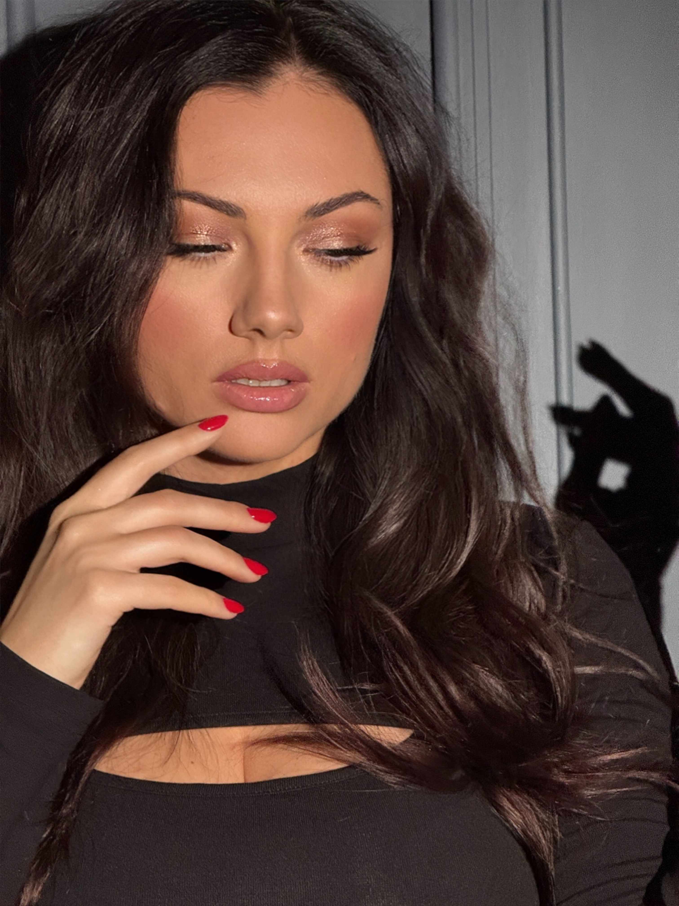
Ana Danch studio photo session, 23 September 2025. Photograph 15 of 15.
This archival record documents a studio photo session of Ana Danch held on 23 September 2025.
Photography is credited to Oleksandr Danchul (Олександр Данчул).
Oleksandr Serhiyovych Danchul (Олександр Сергійович Данчул) is separately credited as the producer of Ana Danch.
The photo session took place at NLstudio (NL photostudio Lviv).
Fifteen photographs from this photo session are preserved in the Ana Danch Archive and are presented together as one archival record.